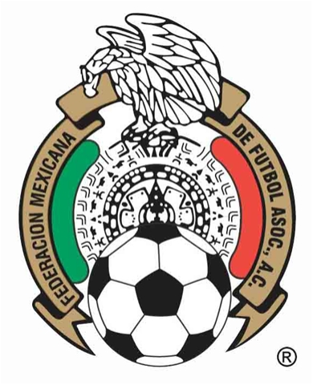

por Pedro Henrique B. N. Prado

O México já viveu dias melhores no futebol. Se, no passado, a seleção dominava as disputas da Concacaf, o país viu os EUA crescerem e subirem de produção, tendo inclusive chegado à final da Copa das Confederações neste ano. Com uma equipe sem muitas referências, os mexicanos vão à Copa do Mundo tentando surpreender.
Nas eliminatórias, o México começou vacilante, sob o comando de Sven Goran-Eriksson. Depois da demissão do sueco e com Javier Aguirre como técnico, o time engrenou e conseguiu a classificação sem maiores sustos. Em 18 jogos, foram 11 vitórias, cinco derrotas e dois empates.
O craque do time está no gol. O jovem Ochoa é o destaque, dando segurança e tranquilidade sob as traves. No ataque, a seleção mexicana ainda depende do veterano Cuauhtémoc Blanco, de 36 anos. A aposta está em Giovani dos Santos, ex-Barcelona e de origem brasileira